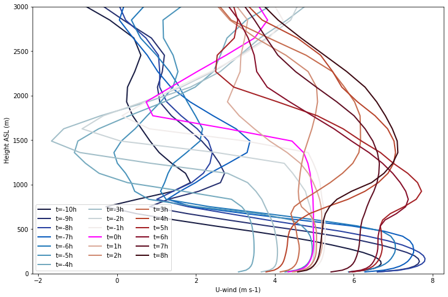
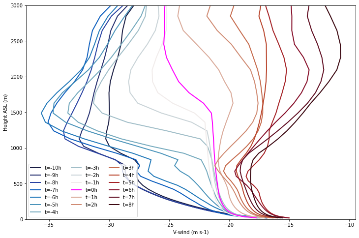
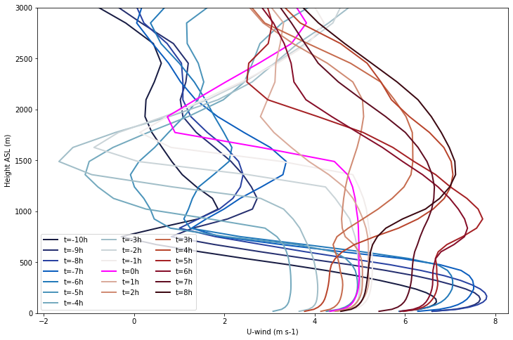
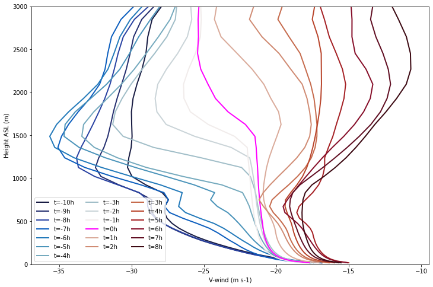
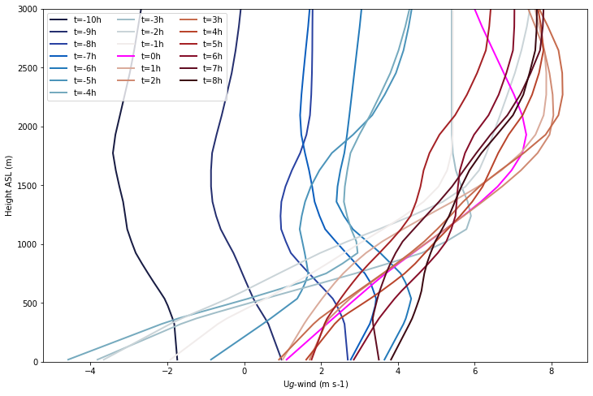
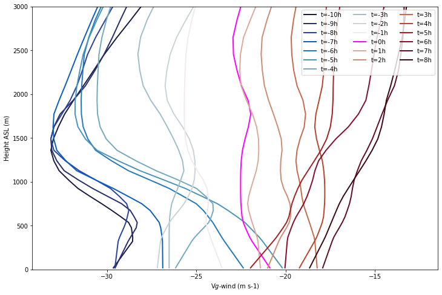
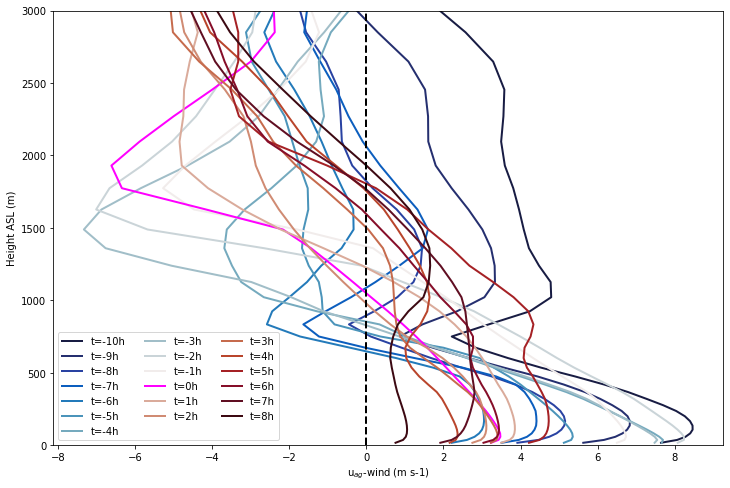
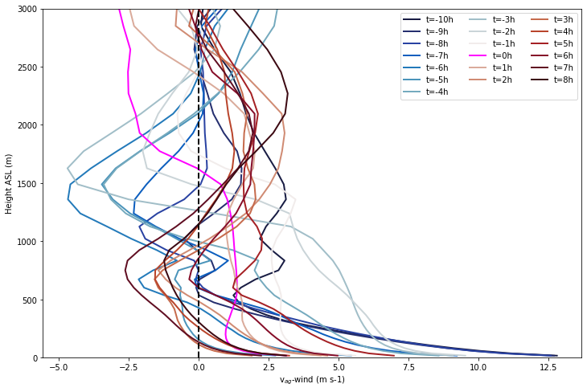
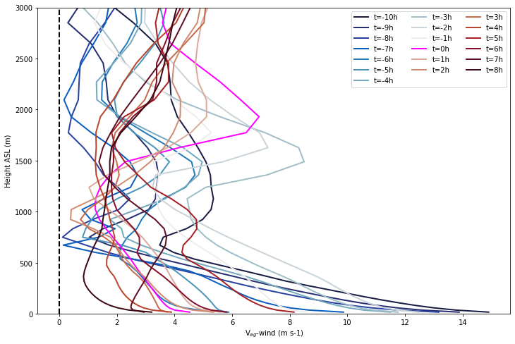

Generate initial and time-varying profile and surface forcing#
Developed by Tim Juliano (NCAR/RAL), Ann Fridlind (NASA-GISS), and Florian Tornow (NASA-GISS/Columbia Univ.)#
v2.0 created on 6/1/23#
We have the option of starting as far as 28 hours before arriving at Andenes (03/12/20 at 14 UTC)#
Import libraries#
import netCDF4
import numpy as np
import numpy.ma as ma
import sys
from netCDF4 import Dataset, date2num,num2date
import datetime as dt
import os
import matplotlib.pyplot as plt
from scipy import interpolate
import geopy.distance
from scipy.ndimage import gaussian_filter1d
import gdal
!!! User mods !!!#
How many hours before ice edge do you want to start?#
Note: t0_h = 0 means you are starting approx. at ice edge, t0_h = 10 means you are starting 10 h upstream (north) of the ice edge#
Note: t0_h must be an integer#
t0_h = 5
if t0_h < 0 or t0_h > 10:
sys.exit('Error: Please set 0 <= t0_h >= 10')
Set some things#
nhrs = 18 + t0_h + 1 # total number of simulation hours, including t0; default is from 2020-03-12 at 14 UTC to 2020-03-14 at 00 UTC
if t0_h == 0:
start_time = '2020-03-13 00:00:00'
start_day = 13
start_hour = 0
else:
start_time = '2020-03-12 ' + str(24-t0_h) + ':00:00'
start_day = 12
start_hour = 24-t0_h
print ('Start time is: ' + start_time)
Start time is: 2020-03-12 19:00:00
Forcing NetCDF name and delete file if already exists#
savename = 'COMBLE_INTERCOMPARISON_FORCING_ERA5ML_V2.0.nc'
if os.path.exists(savename):
os.remove(savename)
print('The file ' + savename + ' has been deleted successfully')
The file COMBLE_INTERCOMPARISON_FORCING_ERA5ML_V2.0.nc has been deleted successfully
Get LES domain locations#
fname_les_domain = 'LES_domain_location_28h_18Z_Mar13_2020.txt'
les_loc = np.loadtxt(fname_les_domain,skiprows=1)
les_hh = les_loc[:,0]
les_hh_idx = np.where(les_hh>=-1.*t0_h)[0]
les_lat = les_loc[les_hh_idx,1]
les_lat2 = les_lat[::12]
les_lon = les_loc[les_hh_idx,2]
les_lon2 = les_lon[::12]
les_lat_mid = round(np.mean(les_lat),1)
les_lon_mid = round(np.mean(les_lon),1)
print ('LES domain mid point: ' + 'lat=' + str(les_lat_mid) + 'N, lon=' + str(les_lon_mid) + 'E')
LES domain mid point: lat=75.6N, lon=9.0E
Create vertical grid#
160 vertical grid levels, defined at the cell faces#
nz = 160
dz_grid = np.empty(nz-1)
dz_grid[0] = 20.0
dz_grid[1] = 25.0
dz_grid[2] = 30.0
dz_grid[3] = 35.0
dz_grid[4:140] = 40.0
dz_grid[140] = 60.0
dz_grid[141:157] = 80.0
dz_grid[157] = 60.0
dz_grid[158] = 50.0
z_grid = np.empty(nz)
z_grid[0] = 0.0
for i in np.arange(1,len(z_grid)):
z_grid[i] = z_grid[i-1] + dz_grid[i-1]
Read in data from ERA5 backtrajectory (netCDF)#
# File name
fname_era5 = 'theta_temp_rh_sh_uvw_sst_along_trajectory_era5ml_28h_end_2020-03-13-18.nc'
# Open dataset
dataset = netCDF4.Dataset(fname_era5, "r")
# Read variables (1D arrays are time, 2D arrays are time x pressure level)
hours = dataset.variables['Time'][:]
lat = dataset.variables['Latitude'][:]
lon = dataset.variables['Longitude'][:]
pres = dataset.variables['Pressure'][:]
sfc_pres = dataset.variables['SfcPres'][:]
sst = dataset.variables['SST'][:]
hgt = dataset.variables['GEOS_HT'][:,:]
uwnd = dataset.variables['U'][:,:]
vwnd = dataset.variables['V'][:,:]
wwnd = dataset.variables['W'][:,:]
temp = dataset.variables['Temp'][:,:]
theta = dataset.variables['Theta'][:,:]
qv = dataset.variables['SH'][:,:]
# File name
fname_era5_o3 = 'ERA5_forcing_along_trajectory_end_2020-03-13-18.nc'
# Open dataset
dataset_o3 = netCDF4.Dataset(fname_era5_o3, "r")
o3 = dataset_o3.variables['O3'][:,:]
pres_o3 = dataset_o3.variables['Pressure'][:]
Convert units#
sfc_pres_pa = sfc_pres/100. # Pa to hPa
pres_pa = pres*100. # hPa to Pa
pres_o3_pa = pres_o3*100. # hPa to Pa
Reverse time dimension of 2D arrays, as well as sfc pressure and sst, so that beginning of backward trajectory is in first position#
hgt = np.flip(hgt,axis=0)
uwnd = np.flip(uwnd,axis=0)
vwnd = np.flip(vwnd,axis=0)
wwnd = np.flip(wwnd,axis=0)
temp = np.flip(temp,axis=0)
theta = np.flip(theta,axis=0)
qv = np.flip(qv,axis=0)
o3 = np.flip(o3,axis=0)
sfc_pres_pa = sfc_pres_pa[::-1]
sst = sst[::-1]
Unmask sst field and get index according to t0_h (furthest north we can go is 28h after backtrajectory initialization from Andenes, or 3/12/20 at 14 UTC)#
sst_real = ma.getdata(sst)
loopidx = np.where(sst_real>0.0)[0]
t0 = loopidx[10-t0_h]
Calculate sfc potential temperature#
theta1000mb = theta[:,0]
sfc_theta = theta1000mb*pow((1000./sfc_pres_pa),0.286)
Get information at t0#
z1 = 0
pres_t0 = pres_pa[z1:]
pres_o3_t0 = pres_o3_pa[z1:]
hgt_t0 = hgt[t0,z1:]
uwnd_t0 = uwnd[t0,z1:]
vwnd_t0 = vwnd[t0,z1:]
wwnd_t0 = wwnd[t0,z1:]
temp_t0 = temp[t0,z1:]
theta_t0 = theta[t0,z1:]
qv_t0 = qv[t0,z1:]
# temporal avg for o3
o3_t0 = np.mean(o3[0:21,z1:],axis=0)
ps_t0 = sfc_pres_pa[t0]
thetas_t0 = sfc_theta[t0]
Extrapolate O3 since ERA5 only goes to 1 hPa and plot versus original profile#
# Add top pressure and o3 value - here we assume o3 goes to zero at 1e-4 Pa
pres_o3_t0_add_top = np.insert(pres_o3_t0,len(pres_o3_t0),0.0001)
o3_t0_add_top = np.insert(o3_t0,len(o3_t0),0.0)
# Add bottom pressure and o3 value - here we assume o3 is constant near the sfc
pres_o3_t0_add_top_bottom = np.insert(pres_o3_t0_add_top,0,pres_t0[0])
o3_t0_add_top_bottom = np.insert(o3_t0_add_top,0,o3_t0[0])
# Do the extrapolation
f = interpolate.interp1d(pres_o3_t0_add_top_bottom, o3_t0_add_top_bottom, kind='linear',fill_value='extrapolate')
o3_t0i = f(pres_t0.data)
plt.figure()
plt.figure(figsize=(8,8))
var_plt1 = o3_t0
var_plt2 = o3_t0i
plt.plot(var_plt1,pres_o3_t0,c='k',label='Original profile')
plt.plot(var_plt2,pres_t0,c='r',ls='--',label='Extrapolated profile')
plt.legend()
plt.xlabel('Ozone (kg kg-1)')
plt.ylabel('Pressure (Pa)')
plt.yscale('log')
plt.gca().invert_yaxis()
plt.show()
<Figure size 432x288 with 0 Axes>
Get Geostrophic wind forcing#
do_geo = True # TEMPORARY FLAG
if do_geo == True:
# Read ERA5 file
era5_geo_file = '/glade/scratch/tjuliano/doe_comble/wrf_asr_cao/WRF-ASR-CAO/scripts/era5/era5_mar13_case_larger.nc'
dataset = netCDF4.Dataset(era5_geo_file, "r")
zl = dataset.variables['z'][24-t0_h:43,0:-1,:,:] # time, lev, lat, lon
lonarrl = dataset.variables['longitude'][:]
latarrl = dataset.variables['latitude'][:]
latloc = np.empty(len(les_lat2),dtype=np.int16)
lonloc = np.empty(len(les_lat2),dtype=np.int16)
ugl = np.empty([len(les_lat2),np.shape(zl)[1]])
vgl = np.empty([len(les_lat2),np.shape(zl)[1]])
zhtl = np.empty([len(les_lat2),np.shape(zl)[1]])
omega = 7.2921e-5 # angular velocity
g = 9.81 # grav constant
min_dx = 20. # minimum grid spacing (km) for discretization
min_dy = 20.
for i in np.arange(len(les_lat2)):
hold = np.abs(les_lat2[i]-latarrl)
latloc[i] = np.argmin(hold)
hold = np.abs(les_lon2[i]-lonarrl)
lonloc[i] = np.argmin(hold)
# Coriolis parameter
e = 2*omega*np.cos(np.radians(les_lat2[i]))
f = 2*omega*np.sin(np.radians(les_lat2[i]))
# Calc dx, dy
offset1 = 1
offset2 = 1
coords_1 = (latarrl[latloc[i]], lonarrl[lonloc[i]-offset2])
coords_2 = (latarrl[latloc[i]], lonarrl[lonloc[i]+offset2])
dx = geopy.distance.geodesic(coords_1, coords_2).km
coords_3 = (latarrl[latloc[i]-offset1], lonarrl[lonloc[i]])
coords_4 = (latarrl[latloc[i]+offset1], lonarrl[lonloc[i]])
dy = geopy.distance.geodesic(coords_3, coords_4).km
while dx < min_dx: # we want at least min_dx km for our zonal discretization, which changes with time (latitude)
offset2+=1
coords_1 = (latarrl[latloc[i]], lonarrl[lonloc[i]-offset2])
coords_2 = (latarrl[latloc[i]], lonarrl[lonloc[i]+offset2])
dx = geopy.distance.geodesic(coords_1, coords_2).km
while dy < min_dy: # we want at least min_dy km for our meridional discretization, which stays mostly constant with time (latitude)
offset1+=1
coords_3 = (latarrl[latloc[i]-offset1], lonarrl[lonloc[i]])
coords_4 = (latarrl[latloc[i]+offset1], lonarrl[lonloc[i]])
dy = geopy.distance.geodesic(coords_3, coords_4).km
dx = dx*1000. # km to m
dy = dy*1000.
# Calc Vg
ugl[i,:] = (-1./f) * (zl[i,:,latloc[i]-offset1,lonloc[i]]-zl[i,:,latloc[i]+offset1,lonloc[i]])/dy
vgl[i,:] = (1/f) * (zl[i,:,latloc[i],lonloc[i]+offset2]-zl[i,:,latloc[i],lonloc[i]-offset2])/dx
zhtl[i,:] = zl[i,:,latloc[i],lonloc[i]]/g
ugeo = np.flip(ugl,1)
vgeo = np.flip(vgl,1)
zgeo = np.flip(zhtl,1)
ugeo = gaussian_filter1d(ugeo, 1)
vgeo = gaussian_filter1d(vgeo, 1)
print ('Geostrophic wind computed')
Geostrophic wind computed
Interpolate/extrapolate Ug/Vg to native ERA5 levels#
if do_geo == True:
ugeo_new = np.empty([np.shape(ugeo)[0],np.shape(hgt)[1]])
vgeo_new = np.empty([np.shape(ugeo)[0],np.shape(hgt)[1]])
zgeo_new = np.empty([np.shape(ugeo)[0],np.shape(hgt)[1]])
for i in np.arange(len(les_lat2)):
zgeo_new[i,:] = hgt[t0+i,z1:]
f = interpolate.interp1d(zgeo[i,:], ugeo[i,:], bounds_error=False, fill_value='extrapolate')
ugeo_new[i,:] = f(zgeo_new[i,:].data)
f = interpolate.interp1d(zgeo[i,:], vgeo[i,:], bounds_error=False, fill_value='extrapolate')
vgeo_new[i,:] = f(zgeo_new[i,:].data)
Interpolate t0 profiles, nudging profiles, and geostrophic wind profiles to common vertical grid for simplicity#
Find time with highest first level and get vertical grid#
if do_geo == True:
zz1_geo = np.empty([nhrs,len(pres_t0)])
count = 0
for i in np.arange(nhrs):
zz1_geo[count,:] = zgeo_new[i,0]
count+=1
zz1_nudge = np.empty([nhrs,len(pres_t0)])
count = 0
for i in np.arange(nhrs):
zz1_nudge[count,:] = hgt[t0+i,z1:]
count+=1
zz1_geo_max_idx = np.argmax(zz1_geo[:,0])
zz1_nudge_max_idx = np.argmax(zz1_nudge[:,0])
zz1_geo_max = zz1_geo[zz1_geo_max_idx,0]
zz1_nudge_max = zz1_nudge[zz1_nudge_max_idx,0]
if zz1_geo_max > zz1_nudge_max:
zgeoi = zz1_geo[zz1_geo_max_idx,0:-1]
else:
zgeoi = zz1_nudge[zz1_nudge_max_idx,0:-1]
else:
zz1_nudge = np.empty([nhrs,len(pres_t0)])
count = 0
for i in np.arange(nhrs):
zz1_nudge[count,:] = hgt[t0+i,z1:]
count+=1
zz1_nudge_max_idx = np.argmax(zz1_nudge[:,0])
zz1_nudge_max = zz1_nudge[zz1_nudge_max_idx,0]
zgeoi = zz1_nudge[zz1_nudge_max_idx,0:-1]
print ('First level for all profiles = ' + str(round(zgeoi[0],3)) + ' m' )
First level for all profiles = 18.168 m
Do the linear interpolation of time-varying geostrophic profiles to new vertical grid#
if do_geo == True:
ugeoi = np.empty([nhrs,len(pres_t0)-1])
vgeoi = np.empty([nhrs,len(pres_t0)-1])
count = 0
for i in np.arange(nhrs):
f = interpolate.interp1d(zgeo_new[i,:], ugeo_new[i,:])
ugeoi[count,:] = f(zgeoi)
f = interpolate.interp1d(zgeo_new[i,:], vgeo_new[i,:])
vgeoi[count,:] = f(zgeoi)
count+=1
Compare original and interpolated profiles of time-varying geostrophic wind as example to show efficacy of method#
zplt1 = 0
zplt2 = nhrs-3
zplt2b = 50
if do_geo == True:
plt.figure()
plt.figure(figsize=(12,8))
var_plt1 = ugeo
var_plt2 = ugeoi
plt.subplot(121)
for i in np.arange(nhrs):
plt.plot(var_plt1[i,zplt1:zplt2],zgeo[i,zplt1:zplt2],c='k')
plt.plot(var_plt2[i,zplt1:zplt2b],zgeoi[zplt1:zplt2b],c='r')
plt.xlabel('U$_{g}$-wind (m s-1)')
plt.ylabel('Height ASL (m)')
var_plt1 = vgeo
var_plt2 = vgeoi
plt.subplot(122)
for i in np.arange(nhrs):
if i == 0:
plt.plot(var_plt1[i,zplt1:zplt2],zgeo[i,zplt1:zplt2],c='k',label='Original profile')
plt.plot(var_plt2[i,zplt1:zplt2b],zgeoi[zplt1:zplt2b],c='r',label='Interpolated profile')
else:
plt.plot(var_plt1[i,zplt1:zplt2],zgeo[i,zplt1:zplt2],c='k')
plt.plot(var_plt2[i,zplt1:zplt2b],zgeoi[zplt1:zplt2b],c='r')
plt.xlabel('V$_{g}$-wind (m s-1)')
plt.legend()
plt.show()
<Figure size 432x288 with 0 Axes>
Do the linear interpolation for initial forcing profiles#
f = interpolate.interp1d(hgt_t0, pres_t0)
pres_t0i = f(zgeoi)
f = interpolate.interp1d(hgt_t0, uwnd_t0)
uwnd_t0i = f(zgeoi)
f = interpolate.interp1d(hgt_t0, vwnd_t0)
vwnd_t0i = f(zgeoi)
f = interpolate.interp1d(hgt_t0, wwnd_t0)
wwnd_t0i = f(zgeoi)
f = interpolate.interp1d(hgt_t0, temp_t0)
temp_t0i = f(zgeoi)
f = interpolate.interp1d(hgt_t0, theta_t0)
theta_t0i = f(zgeoi)
f = interpolate.interp1d(hgt_t0, qv_t0)
qv_t0i = f(zgeoi)
f = interpolate.interp1d(hgt_t0, o3_t0i)
o3_t0i = f(zgeoi)
Do the linear interpolation for nudging forcing profiles#
unudgei = np.empty([nhrs,len(pres_t0)-1])
vnudgei = np.empty([nhrs,len(pres_t0)-1])
do_t_qv_w = True # temp flag for advection checks
if do_t_qv_w == True:
tnudgei = np.empty([nhrs,len(pres_t0)-1])
qvnudgei = np.empty([nhrs,len(pres_t0)-1])
wnudgei = np.empty([nhrs,len(pres_t0)-1])
count = 0
for i in np.arange(nhrs):
f = interpolate.interp1d(hgt[t0+i,z1:], uwnd[t0+i,z1:])
unudgei[count,:] = f(zgeoi)
f = interpolate.interp1d(hgt[t0+i,z1:], vwnd[t0+i,z1:])
vnudgei[count,:] = f(zgeoi)
if do_t_qv_w == True:
f = interpolate.interp1d(hgt[t0+i,z1:], theta[t0+i,z1:])
tnudgei[count,:] = f(zgeoi)
f = interpolate.interp1d(hgt[t0+i,z1:], qv[t0+i,z1:])
qvnudgei[count,:] = f(zgeoi)
f = interpolate.interp1d(hgt[t0+i,z1:], wwnd[t0+i,z1:])
wnudgei[count,:] = f(zgeoi)
count+=1
Compare original and interpolated profiles of time-varying nudging wind as example to show efficacy of method#
zplt1 = 0
zplt2 = nhrs-3
zplt2b = 50
if do_geo == True:
plt.figure()
plt.figure(figsize=(12,8))
var_plt1 = uwnd
var_plt2 = unudgei
plt.subplot(121)
for i in np.arange(nhrs):
plt.plot(var_plt1[t0+i,zplt1:zplt2],hgt[t0+i,zplt1:zplt2],c='k')
plt.plot(var_plt2[i,zplt1:zplt2b],zgeoi[zplt1:zplt2b],c='r')
plt.xlabel('U-wind (m s-1)')
plt.ylabel('Height ASL (m)')
var_plt1 = vwnd
var_plt2 = vnudgei
plt.subplot(122)
for i in np.arange(nhrs):
if i == 0:
plt.plot(var_plt1[t0+i,zplt1:zplt2],hgt[t0+i,zplt1:zplt2],c='k',label='Original profile')
plt.plot(var_plt2[i,zplt1:zplt2b],zgeoi[zplt1:zplt2b],c='r',label='Interpolated profile')
else:
plt.plot(var_plt1[t0+i,zplt1:zplt2],hgt[t0+i,zplt1:zplt2],c='k')
plt.plot(var_plt2[i,zplt1:zplt2b],zgeoi[zplt1:zplt2b],c='r')
plt.xlabel('V-wind (m s-1)')
plt.legend()
plt.show()
<Figure size 432x288 with 0 Axes>
Compare original and interpolated intial profiles as example to show efficacy of method#
zplt1 = 0
zplt2 = 50
plt.figure()
plt.figure(figsize=(12,8))
var_plt1 = uwnd_t0
var_plt2 = uwnd_t0i
plt.subplot(131)
plt.plot(var_plt1[zplt1:zplt2],hgt_t0[zplt1:zplt2],c='k')
plt.plot(var_plt2[zplt1:zplt2],zgeoi[zplt1:zplt2],c='r')
plt.xlabel('U-wind (m s-1)')
plt.ylabel('Height ASL (m)')
var_plt1 = vwnd_t0
var_plt2 = vwnd_t0i
plt.subplot(132)
plt.plot(var_plt1[zplt1:zplt2],hgt_t0[zplt1:zplt2],c='k')
plt.plot(var_plt2[zplt1:zplt2],zgeoi[zplt1:zplt2],c='r')
plt.xlabel('V-wind (m s-1)')
var_plt1 = theta_t0
var_plt2 = theta_t0i
plt.subplot(133)
plt.plot(var_plt1[zplt1:zplt2],hgt_t0[zplt1:zplt2],c='k',label='Original profile')
plt.plot(var_plt2[zplt1:zplt2],zgeoi[zplt1:zplt2],c='r',label='Interpolated profile')
plt.xlabel('Potential Temperature (K)')
plt.legend()
plt.show()
<Figure size 432x288 with 0 Axes>
Compare original and interpolated nudging profiles as example to show efficacy of method#
zplt1 = 0
zplt2 = 50
plt.figure()
plt.figure(figsize=(12,8))
var_plt1 = uwnd
var_plt2 = unudgei
plt.subplot(121)
for i in np.arange(nhrs):
plt.plot(var_plt1[t0+i,zplt1+1:zplt2],hgt[t0+i,zplt1+1:zplt2],c='k')
plt.plot(var_plt2[i,zplt1:zplt2-1],zgeoi[zplt1:zplt2-1],c='r')
plt.xlabel('U-wind (m s-1)')
plt.ylabel('Height ASL (m)')
var_plt1 = vwnd
var_plt2 = vnudgei
plt.subplot(122)
for i in np.arange(nhrs):
if i == 0:
plt.plot(var_plt1[t0+i,zplt1+1:zplt2],hgt[t0+i,zplt1+1:zplt2],c='k',label='Original profile')
plt.plot(var_plt2[i,zplt1:zplt2-1],zgeoi[zplt1:zplt2-1],c='r',label='Interpolated profile')
else:
plt.plot(var_plt1[t0+i,zplt1+1:zplt2],hgt[t0+i,zplt1+1:zplt2],c='k')
plt.plot(var_plt2[i,zplt1:zplt2-1],zgeoi[zplt1:zplt2-1],c='r')
plt.xlabel('V-wind (m s-1)')
plt.legend()
plt.show()
<Figure size 432x288 with 0 Axes>
Compare original and interpolated nudging profiles as example to show efficacy of method#
zplt1 = 0
zplt2 = 50
nhrs_plt = 19
import cmocean
colors = cmocean.cm.balance(np.linspace(0,1,nhrs_plt))
lab = np.arange(19)
print_figs = True
for j in np.arange(3):
plt.figure(figsize=(12,8))
if j == 0:
var_plt1 = tnudgei
elif j == 1:
var_plt1 = unudgei
elif j == 2:
var_plt1 = vnudgei
for i in np.arange(nhrs_plt):
if i == 10:
plt.plot(var_plt1[i,zplt1:zplt2-1],zgeoi[zplt1:zplt2-1],lw=2.,c='magenta',label='t='+str(lab[i]-10)+'h')
else:
plt.plot(var_plt1[i,zplt1:zplt2-1],zgeoi[zplt1:zplt2-1],lw=2.,c=colors[i],label='t='+str(lab[i]-10)+'h')
if j == 0:
plt.xlabel('Potential Temperature (K)')
elif j == 1:
plt.xlabel('U-wind (m s-1)')
elif j == 2:
plt.xlabel('V-wind (m s-1)')
plt.ylabel('Height ASL (m)')
if j == 0:
plt.xlim(245,275)
plt.ylim(0,3000)
plt.legend(ncol=3)
if print_figs == True:
if j == 0:
plt.savefig('ptemp_time_height.png',dpi=300)
elif j == 1:
plt.savefig('uwnd_time_height.png',dpi=300)
elif j == 2:
plt.savefig('vwnd_time_height.png',dpi=300)
 



zplt1 = 0
zplt2 = 50
nhrs_plt = 19
import cmocean
colors = cmocean.cm.balance(np.linspace(0,1,nhrs_plt))
lab = np.arange(19)
print_figs = False
for j in np.arange(3):
plt.figure(figsize=(12,8))
if j == 0:
var_plt1 = tnudgei
elif j == 1:
var_plt1 = ugeoi
elif j == 2:
var_plt1 = vgeoi
for i in np.arange(nhrs_plt):
if i == 10:
plt.plot(var_plt1[i,zplt1:zplt2-1],zgeoi[zplt1:zplt2-1],lw=2.,c='magenta',label='t='+str(lab[i]-10)+'h')
else:
plt.plot(var_plt1[i,zplt1:zplt2-1],zgeoi[zplt1:zplt2-1],lw=2.,c=colors[i],label='t='+str(lab[i]-10)+'h')
if j == 0:
plt.xlabel('Potential Temperature (K)')
elif j == 1:
plt.xlabel('U${g}$-wind (m s-1)')
elif j == 2:
plt.xlabel('V${g}$-wind (m s-1)')
plt.ylabel('Height ASL (m)')
if j == 0:
plt.xlim(245,275)
plt.ylim(0,3000)
plt.legend(ncol=3)
if print_figs == True:
if j == 0:
plt.savefig('ptemp_time_height.png',dpi=300)
elif j == 1:
plt.savefig('uwnd_time_height.png',dpi=300)
elif j == 2:
plt.savefig('vwnd_time_height.png',dpi=300)


Compute ageostrophic winds#
print_figs = False
ymax = 3000
for j in np.arange(3):
plt.figure(figsize=(12,8))
if j == 0:
var_plt1 = unudgei - ugeoi
elif j == 1:
var_plt1 = vnudgei - vgeoi
elif j == 2:
nudge_wspd = np.sqrt(pow(unudgei,2)+pow(vnudgei,2))
geo_wspd = np.sqrt(pow(ugeoi,2)+pow(vgeoi,2))
#var_plt1 = nudge_wspd - geo_wspd
var_plt1 = np.sqrt(pow(unudgei - ugeoi,2)+pow(vnudgei - vgeoi,2))
for i in np.arange(nhrs_plt):
if i == 10:
plt.plot(var_plt1[i,zplt1:zplt2-1],zgeoi[zplt1:zplt2-1],lw=2.,c='magenta',label='t='+str(lab[i]-10)+'h')
else:
plt.plot(var_plt1[i,zplt1:zplt2-1],zgeoi[zplt1:zplt2-1],lw=2.,c=colors[i],label='t='+str(lab[i]-10)+'h')
plt.plot([0,0],[0,ymax],'k',ls='--',lw=2.)
if j == 0:
plt.xlabel('u$_{ag}$-wind (m s-1)')
elif j == 1:
plt.xlabel('v$_{ag}$-wind (m s-1)')
elif j == 2:
plt.xlabel('V$_{ag}$-wind (m s-1)')
plt.ylabel('Height ASL (m)')
plt.ylim(0,ymax)
plt.legend(ncol=3)
if print_figs == True:
if j == 0:
plt.savefig('uagwnd_time_height.png',dpi=300)
elif j == 1:
plt.savefig('vagwnd_time_height.png',dpi=300)
elif j == 2:
plt.savefig('ageownd_time_height.png',dpi=300)



DO SFC FORCING#
Calculate sea ice concentration along trajectory#
sic_file = netCDF4.Dataset('Svalbard_asi-AMSR2-n10m-20200313_m.nc')
sic = sic_file.variables['z'][:,:]
sic_lat = sic_file.variables['lat'][:]
sic_lon = sic_file.variables['lon'][:]
sic_traj = np.empty(len(les_hh_idx))
for i in np.arange(len(les_hh_idx)):
abslat = np.abs(sic_lat-les_lat[i])
abslon = np.abs(sic_lon-les_lon[i])
jlat = np.argmin(abslat)
ilon = np.argmin(abslon)
#print (les_lat[i],les_lon[i])
#print (jlat,ilon)
sic_traj[i] = sic[jlat,ilon]
#print (les_lat_hr[i],les_lon_hr[i],les_hh_hr[les_hh_hr_idx[i]],sic_traj[i])
Get time series information for sfc forcing#
# Interpolate SST
tmp_hh = np.arange(-1*t0_h,19,1) # these are the hours we have SST data from the ERA5 backward trajectory file
f = interpolate.interp1d(tmp_hh, sst[t0:])
sst_interp = f(les_hh[les_hh_idx])
#print (sst_interp)
# Modification for over ice/MIZ
tsk_ice = 247.0
sst_ts = np.empty(len(sic_traj))
for i in np.arange(len(sic_traj)):
#if t0_h == 10:
# if i == 0:
# # Insert first position since backward trajectory file does not have t=0 (-28h)
# sst_ts[i] = tsk_ice
# print ('Computed TSK for hour ' + str(round(5*i/60.,3)) + ': ' + str(round(sst_ts[i],3)))
if sic_traj[i] > 90.0: # over ice
sst_ts[i] = tsk_ice
elif sic_traj[i] > 0.0: # MIZ
sst_ts[i] = (sic_traj[i]/100.)*tsk_ice + (1.-(sic_traj[i]/100.))*sst_interp[i] # MIZ
else: # open ocean
sst_ts[i] = sst_interp[i]
#if t0_h == 10:
# # Do some printing magic
# print ('Computed TSK for hour ' + str(round(5/60.+5*i/60.,3)) + ': '
# + str(round(sst_ts[i],3)) + ' with SIC = ' + str(sic_traj[i]/100.) +
# ' and SST = ' + str(round(sst_interp[i],3)))
#else:
print ('Computed TSK for hour ' + str(round(5*i/60.,3)) + ': '
+ str(round(sst_ts[i],3)) + ' with SIC = ' + str(sic_traj[i]/100.) +
' and SST = ' + str(round(sst_interp[i],3)))
# Pull hourly SST
sst_ts = sst_ts[::12]
Computed TSK for hour 0.0: 247.0 with SIC = 0.99 and SST = 271.46
Computed TSK for hour 0.083: 247.0 with SIC = 0.99 and SST = 271.46
Computed TSK for hour 0.167: 247.0 with SIC = 0.99 and SST = 271.46
Computed TSK for hour 0.25: 247.0 with SIC = 0.99 and SST = 271.46
Computed TSK for hour 0.333: 247.0 with SIC = 0.99 and SST = 271.46
Computed TSK for hour 0.417: 247.0 with SIC = 0.99 and SST = 271.46
Computed TSK for hour 0.5: 247.0 with SIC = 0.99 and SST = 271.46
Computed TSK for hour 0.583: 247.0 with SIC = 0.99 and SST = 271.46
Computed TSK for hour 0.667: 247.0 with SIC = 0.99 and SST = 271.46
Computed TSK for hour 0.75: 247.0 with SIC = 0.98 and SST = 271.46
Computed TSK for hour 0.833: 247.0 with SIC = 0.98 and SST = 271.46
Computed TSK for hour 0.917: 247.0 with SIC = 0.98 and SST = 271.46
Computed TSK for hour 1.0: 247.0 with SIC = 0.98 and SST = 271.46
Computed TSK for hour 1.083: 247.0 with SIC = 0.98 and SST = 271.46
Computed TSK for hour 1.167: 247.0 with SIC = 0.98 and SST = 271.46
Computed TSK for hour 1.25: 247.0 with SIC = 0.98 and SST = 271.46
Computed TSK for hour 1.333: 247.0 with SIC = 0.98 and SST = 271.46
Computed TSK for hour 1.417: 247.0 with SIC = 0.98 and SST = 271.46
Computed TSK for hour 1.5: 247.0 with SIC = 0.98 and SST = 271.46
Computed TSK for hour 1.583: 247.0 with SIC = 0.97 and SST = 271.46
Computed TSK for hour 1.667: 247.0 with SIC = 0.97 and SST = 271.46
Computed TSK for hour 1.75: 247.0 with SIC = 0.97 and SST = 271.46
Computed TSK for hour 1.833: 247.0 with SIC = 0.99 and SST = 271.46
Computed TSK for hour 1.917: 247.0 with SIC = 0.99 and SST = 271.46
Computed TSK for hour 2.0: 247.0 with SIC = 0.99 and SST = 271.46
Computed TSK for hour 2.083: 247.0 with SIC = 0.99 and SST = 271.46
Computed TSK for hour 2.167: 247.0 with SIC = 0.98 and SST = 271.46
Computed TSK for hour 2.25: 247.0 with SIC = 0.98 and SST = 271.46
Computed TSK for hour 2.333: 247.0 with SIC = 0.98 and SST = 271.46
Computed TSK for hour 2.417: 247.0 with SIC = 0.98 and SST = 271.46
Computed TSK for hour 2.5: 247.0 with SIC = 0.99 and SST = 271.46
Computed TSK for hour 2.583: 247.0 with SIC = 0.99 and SST = 271.46
Computed TSK for hour 2.667: 247.0 with SIC = 0.99 and SST = 271.46
Computed TSK for hour 2.75: 247.0 with SIC = 0.99 and SST = 271.46
Computed TSK for hour 2.833: 247.0 with SIC = 0.99 and SST = 271.46
Computed TSK for hour 2.917: 247.0 with SIC = 0.99 and SST = 271.46
Computed TSK for hour 3.0: 247.0 with SIC = 0.99 and SST = 271.46
Computed TSK for hour 3.083: 247.0 with SIC = 0.97 and SST = 271.46
Computed TSK for hour 3.167: 247.0 with SIC = 0.96 and SST = 271.46
Computed TSK for hour 3.25: 247.0 with SIC = 0.98 and SST = 271.46
Computed TSK for hour 3.333: 247.0 with SIC = 0.98 and SST = 271.46
Computed TSK for hour 3.417: 247.0 with SIC = 0.98 and SST = 271.46
Computed TSK for hour 3.5: 247.0 with SIC = 0.98 and SST = 271.46
Computed TSK for hour 3.583: 247.0 with SIC = 1.0 and SST = 271.46
Computed TSK for hour 3.667: 247.0 with SIC = 1.0 and SST = 271.46
Computed TSK for hour 3.75: 247.0 with SIC = 1.0 and SST = 271.46
Computed TSK for hour 3.833: 247.0 with SIC = 1.0 and SST = 271.46
Computed TSK for hour 3.917: 247.0 with SIC = 1.0 and SST = 271.46
Computed TSK for hour 4.0: 247.0 with SIC = 0.97 and SST = 271.46
Computed TSK for hour 4.083: 247.0 with SIC = 0.98 and SST = 271.46
Computed TSK for hour 4.167: 247.0 with SIC = 0.99 and SST = 271.46
Computed TSK for hour 4.25: 247.0 with SIC = 0.99 and SST = 271.46
Computed TSK for hour 4.333: 247.0 with SIC = 0.98 and SST = 271.46
Computed TSK for hour 4.417: 247.0 with SIC = 0.99 and SST = 271.46
Computed TSK for hour 4.5: 247.0 with SIC = 0.98 and SST = 271.46
Computed TSK for hour 4.583: 247.0 with SIC = 0.98 and SST = 271.46
Computed TSK for hour 4.667: 247.0 with SIC = 0.98 and SST = 271.46
Computed TSK for hour 4.75: 247.0 with SIC = 0.95 and SST = 271.46
Computed TSK for hour 4.833: 247.0 with SIC = 0.95 and SST = 271.46
Computed TSK for hour 4.917: 249.935 with SIC = 0.88 and SST = 271.46
Computed TSK for hour 5.0: 249.935 with SIC = 0.88 and SST = 271.46
Computed TSK for hour 5.083: 247.0 with SIC = 0.95 and SST = 271.652
Computed TSK for hour 5.167: 247.0 with SIC = 0.95 and SST = 271.844
Computed TSK for hour 5.25: 263.774 with SIC = 0.33 and SST = 272.035
Computed TSK for hour 5.333: 263.902 with SIC = 0.33 and SST = 272.227
Computed TSK for hour 5.417: 264.031 with SIC = 0.33 and SST = 272.419
Computed TSK for hour 5.5: 265.184 with SIC = 0.29 and SST = 272.611
Computed TSK for hour 5.583: 265.32 with SIC = 0.29 and SST = 272.803
Computed TSK for hour 5.667: 269.615 with SIC = 0.13 and SST = 272.994
Computed TSK for hour 5.75: 269.782 with SIC = 0.13 and SST = 273.186
Computed TSK for hour 5.833: 271.004 with SIC = 0.09 and SST = 273.378
Computed TSK for hour 5.917: 268.256 with SIC = 0.2 and SST = 273.57
Computed TSK for hour 6.0: 271.086 with SIC = 0.1 and SST = 273.762
Computed TSK for hour 6.083: 271.207 with SIC = 0.1 and SST = 273.897
Computed TSK for hour 6.167: 271.329 with SIC = 0.1 and SST = 274.032
Computed TSK for hour 6.25: 274.167 with SIC = 0.0 and SST = 274.167
Computed TSK for hour 6.333: 274.302 with SIC = 0.0 and SST = 274.302
Computed TSK for hour 6.417: 274.437 with SIC = 0.0 and SST = 274.437
Computed TSK for hour 6.5: 274.572 with SIC = 0.0 and SST = 274.572
Computed TSK for hour 6.583: 274.707 with SIC = 0.0 and SST = 274.707
Computed TSK for hour 6.667: 274.842 with SIC = 0.0 and SST = 274.842
Computed TSK for hour 6.75: 274.978 with SIC = 0.0 and SST = 274.978
Computed TSK for hour 6.833: 275.113 with SIC = 0.0 and SST = 275.113
Computed TSK for hour 6.917: 275.248 with SIC = 0.0 and SST = 275.248
Computed TSK for hour 7.0: 275.383 with SIC = 0.0 and SST = 275.383
Computed TSK for hour 7.083: 275.366 with SIC = 0.0 and SST = 275.366
Computed TSK for hour 7.167: 275.349 with SIC = 0.0 and SST = 275.349
Computed TSK for hour 7.25: 275.333 with SIC = 0.0 and SST = 275.333
Computed TSK for hour 7.333: 275.316 with SIC = 0.0 and SST = 275.316
Computed TSK for hour 7.417: 275.299 with SIC = 0.0 and SST = 275.299
Computed TSK for hour 7.5: 275.282 with SIC = 0.0 and SST = 275.282
Computed TSK for hour 7.583: 275.265 with SIC = 0.0 and SST = 275.265
Computed TSK for hour 7.667: 275.249 with SIC = 0.0 and SST = 275.249
Computed TSK for hour 7.75: 275.232 with SIC = 0.0 and SST = 275.232
Computed TSK for hour 7.833: 275.215 with SIC = 0.0 and SST = 275.215
Computed TSK for hour 7.917: 275.198 with SIC = 0.0 and SST = 275.198
Computed TSK for hour 8.0: 275.182 with SIC = 0.0 and SST = 275.182
Computed TSK for hour 8.083: 275.205 with SIC = 0.0 and SST = 275.205
Computed TSK for hour 8.167: 275.228 with SIC = 0.0 and SST = 275.228
Computed TSK for hour 8.25: 275.251 with SIC = 0.0 and SST = 275.251
Computed TSK for hour 8.333: 275.275 with SIC = 0.0 and SST = 275.275
Computed TSK for hour 8.417: 275.298 with SIC = 0.0 and SST = 275.298
Computed TSK for hour 8.5: 275.321 with SIC = 0.0 and SST = 275.321
Computed TSK for hour 8.583: 275.345 with SIC = 0.0 and SST = 275.345
Computed TSK for hour 8.667: 275.368 with SIC = 0.0 and SST = 275.368
Computed TSK for hour 8.75: 275.391 with SIC = 0.0 and SST = 275.391
Computed TSK for hour 8.833: 275.414 with SIC = 0.0 and SST = 275.414
Computed TSK for hour 8.917: 275.438 with SIC = 0.0 and SST = 275.438
Computed TSK for hour 9.0: 275.461 with SIC = 0.0 and SST = 275.461
Computed TSK for hour 9.083: 275.489 with SIC = 0.0 and SST = 275.489
Computed TSK for hour 9.167: 275.518 with SIC = 0.0 and SST = 275.518
Computed TSK for hour 9.25: 275.546 with SIC = 0.0 and SST = 275.546
Computed TSK for hour 9.333: 275.575 with SIC = 0.0 and SST = 275.575
Computed TSK for hour 9.417: 275.603 with SIC = 0.0 and SST = 275.603
Computed TSK for hour 9.5: 275.632 with SIC = 0.0 and SST = 275.632
Computed TSK for hour 9.583: 275.66 with SIC = 0.0 and SST = 275.66
Computed TSK for hour 9.667: 275.689 with SIC = 0.0 and SST = 275.689
Computed TSK for hour 9.75: 275.717 with SIC = 0.0 and SST = 275.717
Computed TSK for hour 9.833: 275.746 with SIC = 0.0 and SST = 275.746
Computed TSK for hour 9.917: 275.774 with SIC = 0.0 and SST = 275.774
Computed TSK for hour 10.0: 275.803 with SIC = 0.0 and SST = 275.803
Computed TSK for hour 10.083: 275.841 with SIC = 0.0 and SST = 275.841
Computed TSK for hour 10.167: 275.88 with SIC = 0.0 and SST = 275.88
Computed TSK for hour 10.25: 275.918 with SIC = 0.0 and SST = 275.918
Computed TSK for hour 10.333: 275.956 with SIC = 0.0 and SST = 275.956
Computed TSK for hour 10.417: 275.995 with SIC = 0.0 and SST = 275.995
Computed TSK for hour 10.5: 276.033 with SIC = 0.0 and SST = 276.033
Computed TSK for hour 10.583: 276.072 with SIC = 0.0 and SST = 276.072
Computed TSK for hour 10.667: 276.11 with SIC = 0.0 and SST = 276.11
Computed TSK for hour 10.75: 276.148 with SIC = 0.0 and SST = 276.148
Computed TSK for hour 10.833: 276.187 with SIC = 0.0 and SST = 276.187
Computed TSK for hour 10.917: 276.225 with SIC = 0.0 and SST = 276.225
Computed TSK for hour 11.0: 276.264 with SIC = 0.0 and SST = 276.264
Computed TSK for hour 11.083: 276.288 with SIC = 0.0 and SST = 276.288
Computed TSK for hour 11.167: 276.313 with SIC = 0.0 and SST = 276.313
Computed TSK for hour 11.25: 276.338 with SIC = 0.0 and SST = 276.338
Computed TSK for hour 11.333: 276.362 with SIC = 0.0 and SST = 276.362
Computed TSK for hour 11.417: 276.387 with SIC = 0.0 and SST = 276.387
Computed TSK for hour 11.5: 276.412 with SIC = 0.0 and SST = 276.412
Computed TSK for hour 11.583: 276.436 with SIC = 0.0 and SST = 276.436
Computed TSK for hour 11.667: 276.461 with SIC = 0.0 and SST = 276.461
Computed TSK for hour 11.75: 276.486 with SIC = 0.0 and SST = 276.486
Computed TSK for hour 11.833: 276.51 with SIC = 0.0 and SST = 276.51
Computed TSK for hour 11.917: 276.535 with SIC = 0.0 and SST = 276.535
Computed TSK for hour 12.0: 276.56 with SIC = 0.0 and SST = 276.56
Computed TSK for hour 12.083: 276.578 with SIC = 0.0 and SST = 276.578
Computed TSK for hour 12.167: 276.596 with SIC = 0.0 and SST = 276.596
Computed TSK for hour 12.25: 276.614 with SIC = 0.0 and SST = 276.614
Computed TSK for hour 12.333: 276.632 with SIC = 0.0 and SST = 276.632
Computed TSK for hour 12.417: 276.65 with SIC = 0.0 and SST = 276.65
Computed TSK for hour 12.5: 276.668 with SIC = 0.0 and SST = 276.668
Computed TSK for hour 12.583: 276.687 with SIC = 0.0 and SST = 276.687
Computed TSK for hour 12.667: 276.705 with SIC = 0.0 and SST = 276.705
Computed TSK for hour 12.75: 276.723 with SIC = 0.0 and SST = 276.723
Computed TSK for hour 12.833: 276.741 with SIC = 0.0 and SST = 276.741
Computed TSK for hour 12.917: 276.759 with SIC = 0.0 and SST = 276.759
Computed TSK for hour 13.0: 276.777 with SIC = 0.0 and SST = 276.777
Computed TSK for hour 13.083: 276.821 with SIC = 0.0 and SST = 276.821
Computed TSK for hour 13.167: 276.864 with SIC = 0.0 and SST = 276.864
Computed TSK for hour 13.25: 276.908 with SIC = 0.0 and SST = 276.908
Computed TSK for hour 13.333: 276.951 with SIC = 0.0 and SST = 276.951
Computed TSK for hour 13.417: 276.995 with SIC = 0.0 and SST = 276.995
Computed TSK for hour 13.5: 277.039 with SIC = 0.0 and SST = 277.039
Computed TSK for hour 13.583: 277.082 with SIC = 0.0 and SST = 277.082
Computed TSK for hour 13.667: 277.126 with SIC = 0.0 and SST = 277.126
Computed TSK for hour 13.75: 277.169 with SIC = 0.0 and SST = 277.169
Computed TSK for hour 13.833: 277.213 with SIC = 0.0 and SST = 277.213
Computed TSK for hour 13.917: 277.256 with SIC = 0.0 and SST = 277.256
Computed TSK for hour 14.0: 277.3 with SIC = 0.0 and SST = 277.3
Computed TSK for hour 14.083: 277.345 with SIC = 0.0 and SST = 277.345
Computed TSK for hour 14.167: 277.391 with SIC = 0.0 and SST = 277.391
Computed TSK for hour 14.25: 277.436 with SIC = 0.0 and SST = 277.436
Computed TSK for hour 14.333: 277.481 with SIC = 0.0 and SST = 277.481
Computed TSK for hour 14.417: 277.527 with SIC = 0.0 and SST = 277.527
Computed TSK for hour 14.5: 277.572 with SIC = 0.0 and SST = 277.572
Computed TSK for hour 14.583: 277.618 with SIC = 0.0 and SST = 277.618
Computed TSK for hour 14.667: 277.663 with SIC = 0.0 and SST = 277.663
Computed TSK for hour 14.75: 277.708 with SIC = 0.0 and SST = 277.708
Computed TSK for hour 14.833: 277.754 with SIC = 0.0 and SST = 277.754
Computed TSK for hour 14.917: 277.799 with SIC = 0.0 and SST = 277.799
Computed TSK for hour 15.0: 277.845 with SIC = 0.0 and SST = 277.845
Computed TSK for hour 15.083: 277.856 with SIC = 0.0 and SST = 277.856
Computed TSK for hour 15.167: 277.868 with SIC = 0.0 and SST = 277.868
Computed TSK for hour 15.25: 277.879 with SIC = 0.0 and SST = 277.879
Computed TSK for hour 15.333: 277.89 with SIC = 0.0 and SST = 277.89
Computed TSK for hour 15.417: 277.902 with SIC = 0.0 and SST = 277.902
Computed TSK for hour 15.5: 277.913 with SIC = 0.0 and SST = 277.913
Computed TSK for hour 15.583: 277.924 with SIC = 0.0 and SST = 277.924
Computed TSK for hour 15.667: 277.936 with SIC = 0.0 and SST = 277.936
Computed TSK for hour 15.75: 277.947 with SIC = 0.0 and SST = 277.947
Computed TSK for hour 15.833: 277.959 with SIC = 0.0 and SST = 277.959
Computed TSK for hour 15.917: 277.97 with SIC = 0.0 and SST = 277.97
Computed TSK for hour 16.0: 277.981 with SIC = 0.0 and SST = 277.981
Computed TSK for hour 16.083: 277.998 with SIC = 0.0 and SST = 277.998
Computed TSK for hour 16.167: 278.014 with SIC = 0.0 and SST = 278.014
Computed TSK for hour 16.25: 278.031 with SIC = 0.0 and SST = 278.031
Computed TSK for hour 16.333: 278.047 with SIC = 0.0 and SST = 278.047
Computed TSK for hour 16.417: 278.063 with SIC = 0.0 and SST = 278.063
Computed TSK for hour 16.5: 278.08 with SIC = 0.0 and SST = 278.08
Computed TSK for hour 16.583: 278.096 with SIC = 0.0 and SST = 278.096
Computed TSK for hour 16.667: 278.112 with SIC = 0.0 and SST = 278.112
Computed TSK for hour 16.75: 278.129 with SIC = 0.0 and SST = 278.129
Computed TSK for hour 16.833: 278.145 with SIC = 0.0 and SST = 278.145
Computed TSK for hour 16.917: 278.161 with SIC = 0.0 and SST = 278.161
Computed TSK for hour 17.0: 278.178 with SIC = 0.0 and SST = 278.178
Computed TSK for hour 17.083: 278.208 with SIC = 0.0 and SST = 278.208
Computed TSK for hour 17.167: 278.238 with SIC = 0.0 and SST = 278.238
Computed TSK for hour 17.25: 278.269 with SIC = 0.0 and SST = 278.269
Computed TSK for hour 17.333: 278.299 with SIC = 0.0 and SST = 278.299
Computed TSK for hour 17.417: 278.329 with SIC = 0.0 and SST = 278.329
Computed TSK for hour 17.5: 278.359 with SIC = 0.0 and SST = 278.359
Computed TSK for hour 17.583: 278.39 with SIC = 0.0 and SST = 278.39
Computed TSK for hour 17.667: 278.42 with SIC = 0.0 and SST = 278.42
Computed TSK for hour 17.75: 278.45 with SIC = 0.0 and SST = 278.45
Computed TSK for hour 17.833: 278.48 with SIC = 0.0 and SST = 278.48
Computed TSK for hour 17.917: 278.511 with SIC = 0.0 and SST = 278.511
Computed TSK for hour 18.0: 278.541 with SIC = 0.0 and SST = 278.541
Computed TSK for hour 18.083: 278.592 with SIC = 0.0 and SST = 278.592
Computed TSK for hour 18.167: 278.642 with SIC = 0.0 and SST = 278.642
Computed TSK for hour 18.25: 278.693 with SIC = 0.0 and SST = 278.693
Computed TSK for hour 18.333: 278.744 with SIC = 0.0 and SST = 278.744
Computed TSK for hour 18.417: 278.795 with SIC = 0.0 and SST = 278.795
Computed TSK for hour 18.5: 278.845 with SIC = 0.0 and SST = 278.845
Computed TSK for hour 18.583: 278.896 with SIC = 0.0 and SST = 278.896
Computed TSK for hour 18.667: 278.947 with SIC = 0.0 and SST = 278.947
Computed TSK for hour 18.75: 278.997 with SIC = 0.0 and SST = 278.997
Computed TSK for hour 18.833: 279.048 with SIC = 0.0 and SST = 279.048
Computed TSK for hour 18.917: 279.099 with SIC = 0.0 and SST = 279.099
Computed TSK for hour 19.0: 279.149 with SIC = 0.0 and SST = 279.149
Computed TSK for hour 19.083: 279.169 with SIC = 0.0 and SST = 279.169
Computed TSK for hour 19.167: 279.188 with SIC = 0.0 and SST = 279.188
Computed TSK for hour 19.25: 279.207 with SIC = 0.0 and SST = 279.207
Computed TSK for hour 19.333: 279.227 with SIC = 0.0 and SST = 279.227
Computed TSK for hour 19.417: 279.246 with SIC = 0.0 and SST = 279.246
Computed TSK for hour 19.5: 279.265 with SIC = 0.0 and SST = 279.265
Computed TSK for hour 19.583: 279.284 with SIC = 0.0 and SST = 279.284
Computed TSK for hour 19.667: 279.304 with SIC = 0.0 and SST = 279.304
Computed TSK for hour 19.75: 279.323 with SIC = 0.0 and SST = 279.323
Computed TSK for hour 19.833: 279.342 with SIC = 0.0 and SST = 279.342
Computed TSK for hour 19.917: 279.362 with SIC = 0.0 and SST = 279.362
Computed TSK for hour 20.0: 279.381 with SIC = 0.0 and SST = 279.381
Computed TSK for hour 20.083: 279.385 with SIC = 0.0 and SST = 279.385
Computed TSK for hour 20.167: 279.39 with SIC = 0.0 and SST = 279.39
Computed TSK for hour 20.25: 279.394 with SIC = 0.0 and SST = 279.394
Computed TSK for hour 20.333: 279.399 with SIC = 0.0 and SST = 279.399
Computed TSK for hour 20.417: 279.403 with SIC = 0.0 and SST = 279.403
Computed TSK for hour 20.5: 279.408 with SIC = 0.0 and SST = 279.408
Computed TSK for hour 20.583: 279.412 with SIC = 0.0 and SST = 279.412
Computed TSK for hour 20.667: 279.417 with SIC = 0.0 and SST = 279.417
Computed TSK for hour 20.75: 279.421 with SIC = 0.0 and SST = 279.421
Computed TSK for hour 20.833: 279.426 with SIC = 0.0 and SST = 279.426
Computed TSK for hour 20.917: 279.43 with SIC = 0.0 and SST = 279.43
Computed TSK for hour 21.0: 279.435 with SIC = 0.0 and SST = 279.435
Computed TSK for hour 21.083: 279.425 with SIC = 0.0 and SST = 279.425
Computed TSK for hour 21.167: 279.416 with SIC = 0.0 and SST = 279.416
Computed TSK for hour 21.25: 279.407 with SIC = 0.0 and SST = 279.407
Computed TSK for hour 21.333: 279.397 with SIC = 0.0 and SST = 279.397
Computed TSK for hour 21.417: 279.388 with SIC = 0.0 and SST = 279.388
Computed TSK for hour 21.5: 279.379 with SIC = 0.0 and SST = 279.379
Computed TSK for hour 21.583: 279.37 with SIC = 0.0 and SST = 279.37
Computed TSK for hour 21.667: 279.36 with SIC = 0.0 and SST = 279.36
Computed TSK for hour 21.75: 279.351 with SIC = 0.0 and SST = 279.351
Computed TSK for hour 21.833: 279.342 with SIC = 0.0 and SST = 279.342
Computed TSK for hour 21.917: 279.333 with SIC = 0.0 and SST = 279.333
Computed TSK for hour 22.0: 279.323 with SIC = 0.0 and SST = 279.323
Computed TSK for hour 22.083: 279.195 with SIC = 0.0 and SST = 279.195
Computed TSK for hour 22.167: 279.068 with SIC = 0.0 and SST = 279.068
Computed TSK for hour 22.25: 278.94 with SIC = 0.0 and SST = 278.94
Computed TSK for hour 22.333: 278.812 with SIC = 0.0 and SST = 278.812
Computed TSK for hour 22.417: 278.684 with SIC = 0.0 and SST = 278.684
Computed TSK for hour 22.5: 278.557 with SIC = 0.0 and SST = 278.557
Computed TSK for hour 22.583: 278.429 with SIC = 0.0 and SST = 278.429
Computed TSK for hour 22.667: 278.301 with SIC = 0.0 and SST = 278.301
Computed TSK for hour 22.75: 278.173 with SIC = 0.0 and SST = 278.173
Computed TSK for hour 22.833: 278.046 with SIC = 0.0 and SST = 278.046
Computed TSK for hour 22.917: 277.918 with SIC = 0.0 and SST = 277.918
Computed TSK for hour 23.0: 277.79 with SIC = 0.0 and SST = 277.79
Create new netcdf file#
try: ncfile.close() # just to be safe, make sure dataset is not already open.
except: pass
ncfile = Dataset('./' + savename,mode='w',format='NETCDF3_CLASSIC')
#print(ncfile)
Create dimensions#
levs = len(zgeoi)
#levs_o3 = len(pres_t0_o3)
z_grid_levs = len(z_grid)
t0_dim = ncfile.createDimension('t0', 1) # initial time axis
lat_dim = ncfile.createDimension('lat', 1) # latitude axis
lon_dim = ncfile.createDimension('lon', 1) # longitude axis
lev_dim = ncfile.createDimension('lev', levs) # level axis
#pres_o3_dim = ncfile.createDimension('pres_o3', levs_o3) # level axis for o3
zw_grid_dim = ncfile.createDimension('zw_grid', z_grid_levs) # zw_grid axis
time_dim = ncfile.createDimension('time', None) # unlimited axis (can be appended to)
#for dim in ncfile.dimensions.items():
# print(dim)
Create global attributes#
ncfile.title='Forcing and initial conditions for 13 March 2020 COMBLE intercomparison case'
ncfile.reference='https://comble-intercomparison.readthedocs.io/en/latest/'
ncfile.authors='Timothy W. Juliano (NCAR/RAL, tjuliano@ucar.edu); Florian Tornow (NASA/GISS, ft2544@columbia.edu); Ann M. Fridlind (NASA/GISS, ann.fridlind@nasa.gov)'
ncfile.version='Created on 2023-06-01'
ncfile.format_version='DEPHY SCM format version 2.0'
ncfile.script='create_comble_forcing_v2.0.ipynb'
ncfile.startDate=start_time
ncfile.endDate='2020-03-13 18:00:00'
ncfile.force_geo=1
ncfile.surfaceType='ocean'
ncfile.surfaceForcing='ts'
ncfile.lat=str(les_lat_mid) + ' deg N'
ncfile.dx='150 m'
ncfile.dy='150 m'
ncfile.dz='see zw_grid variable'
ncfile.nx='648'
ncfile.ny='648'
ncfile.nz='160'
Create variables#
Dimensions#
t0_time = ncfile.createVariable('t0', np.float32, ('t0',))
t0_time.units = 'seconds since ' + start_time
t0_time.long_name = 'Initial time'
latitude = ncfile.createVariable('lat', np.float32, ('lat',))
latitude.units = 'degrees_north'
latitude.long_name = 'latitude'
longitude = ncfile.createVariable('lon', np.float32, ('lon',))
longitude.units = 'degrees_east'
longitude.long_name = 'longitude'
time = ncfile.createVariable('time', np.float64, ('time',))
time.units = 'seconds since ' + start_time
time.long_name = 'time'
lev = ncfile.createVariable('lev', np.float64, ('lev',))
lev.units = 'm'
lev.long_name = 'altitude'
#pressure_o3 = ncfile.createVariable('pres_o3', np.float64, ('pres_o3',))
#pressure_o3.units = 'Pa'
#pressure_o3.long_name = 'pressure for o3'
Initial profiles#
pressure = ncfile.createVariable('pressure', np.float64, ('t0','lev','lat','lon',))
pressure.units = 'Pa'
pressure.long_name = 'pressure'
u = ncfile.createVariable('u', np.float64, ('t0','lev','lat','lon',))
u.units = 'm s-1'
u.long_name = 'zonal wind'
v = ncfile.createVariable('v', np.float64, ('t0','lev','lat','lon',))
v.units = 'm s-1'
v.long_name = 'meridional wind'
temperature = ncfile.createVariable('temp', np.float64, ('t0','lev','lat','lon',))
temperature.units = 'K'
temperature.long_name = 'temperature'
ptemperature = ncfile.createVariable('theta', np.float64, ('t0','lev','lat','lon',))
ptemperature.units = 'K'
ptemperature.long_name = 'potential temperature'
qvapor = ncfile.createVariable('qv', np.float64, ('t0','lev','lat','lon',))
qvapor.units = 'kg kg-1'
qvapor.long_name = 'specific humidity'
ozone = ncfile.createVariable('o3', np.float64, ('t0','lev','lat','lon',))
ozone.units = 'kg kg-1'
ozone.long_name = 'ozone mass mixing ratio'
Initial sfc conditions#
ps = ncfile.createVariable('ps', np.float64, ('t0','lat','lon',))
ps.units = 'Pa'
ps.long_name = 'surface pressure'
thetas = ncfile.createVariable('thetas', np.float64, ('t0','lat','lon',))
thetas.units = 'K'
thetas.long_name = 'surface potential temperature'
Time-varying forcing - geostrophic#
if do_geo == True:
ug = ncfile.createVariable('ug', np.float64, ('time','lev',))
ug.units = 'm s-1'
ug.long_name = 'geostrophic zonal wind'
vg = ncfile.createVariable('vg', np.float64, ('time','lev',))
vg.units = 'm s-1'
vg.long_name = 'geostrophic meridional wind'
Time-varying forcing - nudging#
u_nudging = ncfile.createVariable('u_nudging', np.float64, ('time','lev',))
u_nudging.units = 'm s-1'
u_nudging.long_name = 'zonal wind profile for nudging'
v_nudging = ncfile.createVariable('v_nudging', np.float64, ('time','lev',))
v_nudging.units = 'm s-1'
v_nudging.long_name = 'meridional wind profile for nudging'
if do_t_qv_w == True:
theta_nudging = ncfile.createVariable('theta_nudging', np.float64, ('time','lev',))
theta_nudging.units = 'K'
theta_nudging.long_name = 'potential temperature profile for nudging'
qv_nudging = ncfile.createVariable('qv_nudging', np.float64, ('time','lev',))
qv_nudging.units = 'kg kg-1'
qv_nudging.long_name = 'specific humidity profile for nudging'
w_nudging = ncfile.createVariable('w_nudging', np.float64, ('time','lev',))
w_nudging.units = 'Pa s-1'
w_nudging.long_name = 'vertical velocity for nudging'
Time-varying forcing - surface#
ts = ncfile.createVariable('ts', np.float64, ('time',))
ts.units = 'K'
ts.long_name = 'surface temperature'
Misc#
zw_grid = ncfile.createVariable('zw_grid', np.float64, ('zw_grid',))
zw_grid.units = 'm'
zw_grid.long_name = 'grid altitude at cell faces'
Write data#
t0_time[:] = 0.0
latitude[:] = les_lat_mid
longitude[:] = les_lon_mid
lev[:] = zgeoi
zw_grid[:] = z_grid
pressure[:] = pres_t0i
#pressure_o3[:] = pres_t0_o3
u[:] = uwnd_t0i
v[:] = vwnd_t0i
temperature[:] = temp_t0i
ptemperature[:] = theta_t0i
qvapor[:] = qv_t0i
ozone[:] = o3_t0i
ps[:] = ps_t0
thetas[:] = thetas_t0
if do_geo == True:
ug[:] = ugeoi
vg[:] = vgeoi
u_nudging[:] = unudgei
v_nudging[:] = vnudgei
if do_t_qv_w == True:
theta_nudging[:] = tnudgei
qv_nudging[:] = qvnudgei
w_nudging[:] = wnudgei
ts[:] = sst_ts
Add times#
dates = []
for i in np.arange(nhrs):
if nhrs == 19:
dates.append(dt.datetime(2020,3,13,i))
print (dt.datetime(2020,3,13,i))
else:
if start_hour+i > 23:
dates.append(dt.datetime(2020,3,13,start_hour+i-24))
print (dt.datetime(2020,3,13,start_hour+i-24))
else:
dates.append(dt.datetime(2020,3,12,start_hour+i))
print (dt.datetime(2020,3,12,start_hour+i))
times = date2num(dates, time.units)
time[:] = times
2020-03-12 19:00:00
2020-03-12 20:00:00
2020-03-12 21:00:00
2020-03-12 22:00:00
2020-03-12 23:00:00
2020-03-13 00:00:00
2020-03-13 01:00:00
2020-03-13 02:00:00
2020-03-13 03:00:00
2020-03-13 04:00:00
2020-03-13 05:00:00
2020-03-13 06:00:00
2020-03-13 07:00:00
2020-03-13 08:00:00
2020-03-13 09:00:00
2020-03-13 10:00:00
2020-03-13 11:00:00
2020-03-13 12:00:00
2020-03-13 13:00:00
2020-03-13 14:00:00
2020-03-13 15:00:00
2020-03-13 16:00:00
2020-03-13 17:00:00
2020-03-13 18:00:00
Close the file#
# first print the Dataset object to see what we've got
print(ncfile)
# close the Dataset.
ncfile.close(); print('Dataset is closed!')
<class 'netCDF4._netCDF4.Dataset'>
root group (NETCDF3_CLASSIC data model, file format NETCDF3):
title: Forcing and initial conditions for 13 March 2020 COMBLE intercomparison case
reference: https://comble-intercomparison.readthedocs.io/en/latest/
authors: Timothy W. Juliano (NCAR/RAL, tjuliano@ucar.edu); Florian Tornow (NASA/GISS, ft2544@columbia.edu); Ann M. Fridlind (NASA/GISS, ann.fridlind@nasa.gov)
version: Created on 2023-06-01
format_version: DEPHY SCM format version 2.0
script: create_comble_forcing_v2.0.ipynb
startDate: 2020-03-12 19:00:00
endDate: 2020-03-13 18:00:00
force_geo: 1
surfaceType: ocean
surfaceForcing: ts
lat: 75.6 deg N
dx: 150 m
dy: 150 m
dz: see zw_grid variable
nx: 648
ny: 648
nz: 160
dimensions(sizes): t0(1), lat(1), lon(1), lev(136), zw_grid(160), time(24)
variables(dimensions): float32 t0(t0), float32 lat(lat), float32 lon(lon), float64 time(time), float64 lev(lev), float64 pressure(t0,lev,lat,lon), float64 u(t0,lev,lat,lon), float64 v(t0,lev,lat,lon), float64 temp(t0,lev,lat,lon), float64 theta(t0,lev,lat,lon), float64 qv(t0,lev,lat,lon), float64 o3(t0,lev,lat,lon), float64 ps(t0,lat,lon), float64 thetas(t0,lat,lon), float64 ug(time,lev), float64 vg(time,lev), float64 u_nudging(time,lev), float64 v_nudging(time,lev), float64 theta_nudging(time,lev), float64 qv_nudging(time,lev), float64 w_nudging(time,lev), float64 ts(time), float64 zw_grid(zw_grid)
groups:
Dataset is closed!